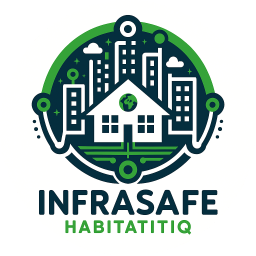

INFRASAFE - МОНИТОРИНГ ИНФРАСТРУКТУРЫ
О системе
Документация
Контакты
Войти
ТЕСТОВЫЕ ДАННЫЕ
×
Вход в систему
Логин
Пароль
Войти
Мониторинг состояния объектов инфраструктуры в режиме реального времени